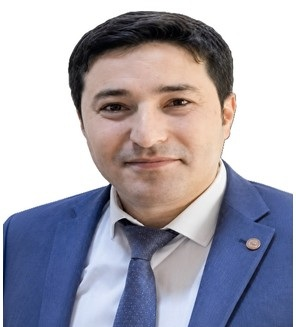

Profil
Şəhriyar Muxtarov 2024-cü ilin mayından Seuldakı Koreya Universitetinin İqtisadiyyat departamentində professordur. 2023-cü ilin avqustundan Varşavadakı Vistula Universitetində professor və PhD proqramının rəhbəri, 2023-cü ilin noyabrından Bakıdakı Xəzər Universitetində professordur. 2012–2016-cı illərdə Marmara Universitetinin Bank və Sığorta İnstitutunda PhD dərəcəsi alıb. Azərbaycan Respublikasının Prezidenti yanında Ali Attestasiya Komissiyası diplomu 27 aprel 2018-ci ildə təsdiq edib və 12 oktyabr 2021-ci ildə dosent elmi adını verib. Magistr dərəcəsini 2010–2012-ci illərdə Marmara Universitetində, beynəlxalq iqtisadiyyat üzrə bakalavr dərəcəsini 2006–2010-cu illərdə Azərbaycan Dövlət İqtisad Universitetində alıb.
İş təcrübəsi
İqtisadiyyat departamenti, Koreya Universiteti, Seul, Cənubi Koreya
may 2024–hazırdaProfessor
Biznes və Beynəlxalq Münasibətlər fakültəsi, Vistula Universiteti, Varşava, Polşa
avqust 2023–hazırdaProfessor və PhD proqramının rəhbəri
Dayanıqlı İqtisadi İnkişaf üzrə Tədqiqat Mərkəzi, Xəzər Universiteti, Bakı, Azərbaycan
iyul 2024–hazırdaDirektor
İqtisadiyyat və menecment departamenti, Xəzər Universiteti, Bakı, Azərbaycan
noyabr 2023–hazırdaProfessor
UNEC Empirik Tədqiqatlar Mərkəzi, Azərbaycan Dövlət İqtisad Universiteti, Bakı
sentyabr 2018–hazırdaElmi işçi
İqtisadiyyat və Beynəlxalq Münasibətlər fakültəsi, Vistula Universiteti, Varşava, Polşa
March 2021–August 2023Elmi işçi və dosent
Bakı Mühəndislik Universiteti, Bakı, Azərbaycan
February 2019–September 2022İqtisadiyyat kafedrasının müdiri
İqtisadiyyat departamenti, Bakı Mühəndislik Universiteti, Bakı, Azərbaycan
May 2019–September 2022Dosent
İqtisadiyyat departamenti, Bakı Mühəndislik Universiteti, Bakı, Azərbaycan
February 2017–May 2019Baş müəllim
İqtisadiyyat və menecment departamenti, Azərbaycan Dövlət İqtisad Universiteti, Bakı
March 2017–June 2020Baş müəllim
İqtisadiyyat və menecment fakültəsi, Xəzər Universiteti, Bakı, Azərbaycan
September 2017–February 2019Dekan müavini
Qafqaz Universiteti, Bakı, Azərbaycan
December 2014–February 2017İqtisadiyyat kafedrası müdirinin müavini
İqtisadiyyat departamenti, Qafqaz Universiteti, Bakı, Azərbaycan
September 2011–March 2014Elmi köməkçi
Təhsil
Dosent
12 October 2021Azərbaycan Respublikasının Prezidenti yanında Ali Attestasiya Komissiyasının verdiyi elmi ad
Bakı, Azərbaycan
PhD
2012–2016Diplom 27 aprel 2018-ci ildə Ali Attestasiya Komissiyası tərəfindən təsdiq edilib
Bank və Sığorta İnstitutu, Marmara Universiteti, İstanbul, Türkiyə
Magistr dərəcəsi
2010–2012Bank və Sığorta İnstitutu, Marmara Universiteti, İstanbul, Türkiyə
Bakalavr dərəcəsi
2006–2010Beynəlxalq iqtisadiyyat
Azərbaycan Dövlət İqtisad Universiteti, Bakı, Azərbaycan
Qrantlar və layihələr
- 2020 — CAREC üzvləri arasında sərbəst ticarət sazişləri ilə ixraca əsaslanan artım: Pakistan–Çin sazişindən öyrənmək — CTTN tədqiqat qrantları proqramı, CAREC İnstitutu
Tədris
- İqtisadiyyata giriş; mikroiqtisadiyyat; makroiqtisadiyyat; pul siyasəti; ətraf mühit iqtisadiyyatı; iqtisadi inkişaf; tədqiqat metodları — Qafqaz Universiteti və sonrakı vəzifələr
Elmi rəhbərlik
- Master’s — 14 — Azərbaycan Dövlət İqtisad Universiteti, Bakı Mühəndislik Universiteti və Qafqaz Universitetində 2016–2020-ci illərin adlı dissertasiyaları
Nəşrlər
Kitablar və dərsliklər
1. Shahriyar Mukhtarov, Elvin Alirzayev and Elchin Suleymanov, 2019. International Financial Institutions and Azerbaijan. Adiloglu, Baku/Azerbijan.
2. Shahriyar Mukhtarov, Murad Isgandarov, 2023, Monetary Economics, Baku Engineering University, Baku/Azerbijan.
Kitab fəsilləri
1. Shahriyar Mukhtarov and Javid Aliyev. 2021. The Relationship between Financial Innovation and Economic Growth: An Evidence from Azerbaijan. In “Strategic Outlook in Business and Finance Innovation: Multidimensional Policies for Emerging Economies”. Emerald Publishing Limited. 207-217. https://doi.org/10.1108/978-1-80043-444-820211019
2. Shahriyar Mukhtarov, Javid Aliyev and Shahin Maharramli. (2022). Does Institutional Quality Affect Renewable Energy in Oil-Rich Developing Countries? Evidence from Azerbaijan. In: Dinçer, H., Yüksel, S. (eds) Circular Economy and the Energy Market. Contributions to Economics. Springer, Cham. https://doi.org/10.1007/978-3-031-13146-2_14
Rəylənmiş (peer-reviewed) jurnal məqalələri
1. Shahriyar Mukhtarov, Mustafa Tevfik Kartal, Nigar Hajiyeva (2025). Investigation of Displacement between Main Clean Energy Types: Evidence from Leading Developed Countries through Quantile Approaches Renewable Energy, 238, 121988
2. Shahriyar Mukhtarov, Mustafa Tevfik Kartal, Dervis Kirikkaleli, (2025). Achieving environmental quality through stringent environmental policies: Comparative evidence from G7 countries by multiple environmental indicators, Geoscience Frontiers, 16(1), https://doi.org/10.1016/j.gsf.2024.101956.
3. Shahriyar Mukhtarov, (2024). Oil prices and the renewable energy transition: Empirical evidence from China, Utilities Policy, 91, https://doi.org/10.1016/j.jup.2024.101840.
4. Shahriyar Mukhtarov, Fakhri J. Hasanov, Elchin Suleymanov, Sad Shannak, (2024), The role of renewable energy and total factor productivity in reducing carbon emissions: A case of top-ranked nations in the renewable energy country attractiveness index, Journal of Environmental Management, 361, https://doi.org/10.1016/j.jenvman.2024.121220.
5. Shahriyar Mukhtarov, Mayis Azizov, Mustafa Tevfik Kartal, Hazi Eynalov. (2024). Catalyzing green transformation: mitigating oil price impact on CO2 emissions in Saudi Arabia via renewable energy transition. Environmental Economics and Policy Studies. https://doi.org/10.1007/s10018-024-00416-1
6. Shahriyar Mukhtarov, Mustafa Tevfik Kartal, Ugur Korkut Pata, Dilvin Taşkın (2024). Impact of disaggregated level clean electricity on CO2 emissions: Evidence from EU-5 countries by bivariate and multivariate QQ approaches. Energy and Environment. https://doi.org/10.1177/0958305X2412662
7. Shahriyar Mukhtarov, Ugur Korkut Pata, Mustafa Tevfik Kartal, Cosimo Magazzino, (2024). Do energy and geopolitical risks influence environmental quality? A quantile-based load capacity factor assessment for fragile countries, Energy Strategy Reviews, 53, https://doi.org/10.1016/j.esr.2024.101430.
8. Ugur Korkut Pata, Mustafa Tevfik Kartal, Shahriyar Mukhtarov, (2024), Technological changes and carbon neutrality targets in European countries: A sustainability approach with Fourier approximations, Technological Forecasting and Social Change, 198, https://doi.org/10.1016/j.techfore.2023.122994.
9. Shahriyar Mukhtarov, Rıdvan Karacan, Sugra Humbatova, (2024), The long-run effect of financial development on carbon emissions in Kazakhstan, Energy Efficiency, 17(3), DOI: 10.1007/s12053-024-10201-4.
10. Shahriyar Mukhtarov. (2024). Do renewable energy and total factor productivity eliminate CO2 emissions in Turkey? Environmental Economics and Policy Studies. https://doi.org/10.1007/s10018-023-00377-x
11. Shahriyar Mukhtarov, Jeyhun I. Mikayilov, 2023. Could financial development eliminate energy poverty through renewable energy in Poland?, Energy Policy, 182, https://doi.org/10.1016/j.enpol.2023.113747.
12. Shahriyar Mukhtarov, Sarvar Gurbanov, Jeyhun Mikayilov, Shahin Maharramli. 2023. The price and income elasticities of natural gas demand in Azerbaijan: Is there room to export more?. Humanities and Social Sciences Communications, 10, 458. https://doi.org/10.1057/s41599-023-01987-2.
13. Shahriyar Mukhtarov, Fakhri J. Hasanov, Elchin Suleymanov. 2023. The role of renewable energy and total factor productivity in reducing CO2 emissions in Azerbaijan. Fresh insights from a new theoretical framework coupled with Autometrics, Energy Strategy Reviews, 47, https://www.sciencedirect.com/science/article/pii/S2211467X23000299
14. Shahriyar Mukhtarov, Sarvar Gurbanov, Jeyhun Mikayilov. Sakit Yagubov. 2023. Forecasting 2030 CO2 reduction targets for Russia as a major emitter using different estimation scenarios. Journal of Applied Economics. 26(1). https://doi.org/10.1080/15140326.2022.2146861
15. Shahriyar Mukhtarov, 2022. The impact of carbon pricing on international competitiveness in the case of Azerbaijan, Environmental Science and Pollution Research. https://doi.org/10.1007/s11356-022-18606-3
16. Shahriyar Mukhtarov, Jeyhun Mikayilov, Shahin Maharramov, Javid Aliyev Elchin Suleymanov. 2022. Higher Oil Prices, Are they Good or Bad for Renewable Energy Consumption: The Case of Iran? Renewable Energy. 186, 411-419, https://doi.org/10.1016/j.renene.2021.12.135
17. Shahriyar Mukhtarov, Serhat Yüksel, Hasan Dinçer. 2022. The impact of financial development on renewable energy consumption: Evidence from Turkey, Renewable Energy. 187, 169-176, https://doi.org/10.1016/j.renene.2022.01.061
18. Shahriyar Mukhtarov, Hasan Dinçer, Halim Baş, Serhat Yüksel. 2022. Policy Recommendations for Handling Brain Drains to Provide Sustainability in Emerging Economies. Sustainability, 14(23), 16244; https://doi.org/10.3390/su142316244
19. Shahriyar Mukhtarov, Fuzuli Aliyev, Javid Aliyev, Richard Ajayi. 2023. Renewable Energy Consumption and Carbon Emissions: Evidence from an Oil-Rich Economy. Sustainability, 15(1),134; https://doi.org/10.3390/su15010134
20. Li Zhe, Serhat Yüksel, Hasan Dinçer, Shahriyar Mukhtarov, Mayis Azizov. 2021. The Positive Influences of Renewable Energy Consumption on Financial Development and Economic Growth. SAGE Open. 11(3). https://doi.org/10.1177/21582440211040133
21. Rıdvan Karacan, Shahriyar Mukhtarov, İsmail Barış, Aykut İşleyen and Mehmet Emin Yardımcı, 2021. The Impact of Oil Price on Transition toward Renewable Energy Consumption? Evidence from Russia. Energies, 14(10), 2947; https://doi.org/10.3390/en14102947
22. Shahriyar Mukhtarov, Sugra Humbatova, Mubariz Mammadli and Natig Gadim‒Oglu Hajiyev, 2021. The Impact of Oil Price Shocks on National Income: Evidence from Azerbaijan. Energies, 14(6), 1695; https://doi.org/10.3390/en14061695
23. Jeyhun I. Mikayilov, Shahriyar Mukhtarov and Jeyhun Mammadov. 2020. Gasoline Demand Elasticities at the Backdrop of Lower Oil Prices: Fuel-Subsidizing Country Case. Energies, 13(24). 6752; https://doi.org/10.3390/en13246752
24. Shahriyar Mukhtarov, Sugra Humbatova, Natig Hajiyev and Sannur Aliyev. 2020. The Financial Development-Renewable Energy Consumption Nexus in the Case of Azerbaijan. Energies, 13(23). 6265. https://doi.org/10.3390/en13236265
25. Shahriyar Mukhtarov, Jeyhun I. Mikayilov, Shahriyar Aliyev, Altay İsmiyilov and Anar Rzayev. (2020). The FDI-CO2 nexus from the sustainable development perspective: the case of Azerbaijan. International Journal of Sustainable Development & World Ecology. https://doi.org/10.1080/13504509.2020.1804479
26. Shahriyar Mukhtarov, Sugra Humbatova, İlgar Seyfullayev and Yashar Kelbiyev. 2020. The effect of financial development on energy consumption in the case of Kazakhstan. Journal of Applied Economics. 23(1),75-88.
27. Jeyhun I. Mikayilov, Shahriyar Mukhtarov, Hasan Dincer, Serhat Yuksel and Ridvan Aydin. 2020. Elasticity Analysis of Fossil Energy Sources for Sustainable Economies: A Case of Gasoline Consumption in Turkey. Energies 13(3), 731. https://www.mdpi.com/1996-1073/13/3/731/htm
28. Shahriyar Mukhtarov, Jeyhun I. Mikayilov, Sugra Humbatova, Vugar Muradov. 2020. Do High Oil Prices Obstruct the Transition to Renewable Energy Consumption? Sustainability 12 (11), 4689.
29. Jeyhun I. Mikayilov, Shahriyar Mukhtarov, Jeyhun Mammadov and Shahriyar Aliyev. 2020. Environmental consequences of tourism: do oil-exporting countries import more CO2 emissions? Energy Sources, Part B: Economics, Planning, and Policy, 1- 14. DOI: 10.1080/15567249.2020.1753856
30. Fakhri J. Hasanov, Jeyhun I. Mikayilov, Shahriyar Mukhtarov, Elchin Suleymanov. 2019. Does CO2 emissions economic growth relationship reveal EKC in developing countries? Evidence from Kazakhstan. Environmental Science and Pollution Research 26 (34), 35282-35282. https://doi.org/10.1007/s11356-019-06166-y
31. Jeyhun I. Mikayilov, Shahriyar Mukhtarov, Jeyhun Mammadov, Mayis Azizov. 2019. Re-evaluating the environmental impacts of tourism: does EKC exist? Environmental Science and Pollution Research, https://doi.org/10.1007/s11356-019-05269-w
32. Serhat Yüksel, Shahriyar Mukhtarov, Ceyhun Mahmudlu, Jeyhun I. Mikayilov, Anar Iskandarov. 2018. Measuring International Migration in Azerbaijan, Sustainability, 10, 132. https://doi.org/10.3390/su10010132
33. Shahriyar Mukhtarov, Jeyhun I. Mikayilov, Jeyhun Mammadov, Elvin Mammadov. 2018. The Impact of Financial Development on Energy Consumption: Evidence from an Oil-Rich Economy, Energies, 11(6), 1536; https://doi.org/10.3390/en11061536
34. Serhat Yüksel, Shahriyar Mukhtarov, Elvin Mammadov, 2018. Determinants of Profitability in the Banking Sector: An Analysis of Post-Soviet Countries, Economies, 6(3), 1-15,
35. Shahriyar Mukhtarov, Javid Aliyev, Farid Jabiyev, Davur Han Aslan, 2024. The role of institutional quality in reducing environmental degradation in Canada. Economics and Sociology, 17(1), 89-102. doi:10.14254/2071-789X.2024/17-1/6
36. Shahriyar Mukhtarov, Javid Aliyev, Piotr F. Borowski, Mustafa Disli, 2023. Institutional quality and renewable energy transition: Empirical evidence from Poland. Journal of International Studies. 16(3). DOI: 10.14254/2071-8330.2023/16-3/12
37. Shahriyar Mukhtarov, 2022. The Relationship between Renewable Energy Consumption and Economic Growth in Azerbaijan. International Journal of Energy Economics and Policy. 12(1), 416-419.
38. Shahriyar Mukhtarov, Ridvan Karacan, Fuzuli Aliyev, Vugar Ismayilov, 2022. The Effect of Financial Development on Energy Consumption: Evidence from Russia. International Journal of Energy Economics and Policy. 12(1), 243-249.
39. Shahriyar Mukhtarov, Sugra Humbatova, Natig Gadim-Oglu Hajiyev, 2021. Is the Transition to Renewable Energy Consumption Hampered by High Oil Prices?. International Journal of Energy Economics and Policy. 11(5), 377-380.
40. Shahriyar Mukhtarov, Mustafa M. Alalawneh, Mayis Aziziov, Farid Jabiyev. 2020. The Impact of Monetary Policy and Tax Revenues on Foreign Direct Investment Inflows: An Empirical Study on Jordan, Acta Universitatis Agriculturae et Silviculturae Mendelianae Brunensis, 68(6).
41. Javid Aliyev, Shahriyar Mukhtarov, Khanlar Haydarov and Murad Isgandarov. 2020. Does Monetary Policy Boost Economic Growth? The Case of Small Open Economy. Research in World Economy. 11(3).
42. Shahriyar Mukhtarov, İlkin Mammadov, Suqra Humbatova, (2020). The relationship between government expenditures on education and economic growth: The case of Azerbaijan. Research in World Economy. 11(1).
43. Shahriyar Mukhtarov, Sannur Aliyev, Cavid Zeynalov. 2020. The Effect of Oil Prices on Macroeconomic Variables: Evidence from Azerbaijan, Journal of Energy Economics and Policy, 9(7), 97-102.
44. Shahriyar Mukhtarov, Mustafa M. Alalawneh, Elsevar Ibadov, Ayten Huseynli. 2019. The Impact of Foreign Direct Investment on Exports in Jordan: An Empirical Analysis, Journal of International Studies, 12(3), 277-288.
45. Shahriyar Mukhtarov, Sugra Humbatova, Ilgar Seyfullayev. 2019. The impact of bank credits on non-oil GDP: evidence from Azerbaijan”, Banks and Banks Systems, 14(2), 120-127.
46. Shahriyar Mukhtarov, Serhat Yüksel, Elvsevar Ibadov and Hamid Hamidov (2019). The effectiveness of exchange rate channel in Azerbaijan: an empirical analysis. Banks and Bank Systems, 14(1), 111-121. doi:10.21511/bbs.14(1).2019.10
47. Jeyhun I. Mikayilov, Shahriyar Mukhtarov. 2019. Income and Price Elasticities of Gasoline Demand: An Empirical Analysis for Russia. ASERC Journal of Socio-Economic Studies 2 (1), 3-12. https://www.ajses.az/archive2019-2-1?
48. Shahriyar Mukhtarov, Ilkin Gasimov, Ulvi Rustamov. 2018. Evaluation of Fiscal Policy Impact on Economic Growth:The Case of Azerbaijan. ASERC Journal of Socio-Economic Studies 1 (1), 82-90. https://www.ajses.az/archive2018-1-1
49. Rasul Rasulov, Jeyhun I. Mikayilov and Sahriyar Muxtarov, 2017. The Impact of Urbanization on Energy Consumption in Azerbaıjan”. Journal of Baku Engineering University, 1/1, 86-97.
50. Sahriyar Muxtarov, Jeyhun I. Mikayilov, Zamiq Mammadov. 2016. Processing of Bank Lending Channel in Azerbaijan: An Empirical Analysis. Akademik Bakış. 56:475-488. http://dergipark.gov.tr/abuhsbd/issue/32964/366331
51. Shahriyar Mukhtarov, Hasan Selcuk, Elvin Mammadov, 2016. Monetary Transmission Mechanisms: The Case of Azerbaijan, Journal of Research in Business & Social Science 5(2) Special Issue, 16-33.
52. Shahriyar Mukhtarov, Fərid Cəbiyev, 2016. The assesment of Azerbaijan`s macroeconomic indicators on independence years, Journal of Qafqaz University, 4(2), Azerbaijan.
53. Batu K. Tunay, Shahriyar Mukhtarov, 2016. Determinants of Bank Profitability in Azerbaijan, Journal of Akademik Bakış Dergisi, 54, 689-704.
54. Shahriyar Mukhtarov, Jeyhun Mikayılov, 2016. Testing of Monetary Policy Transmission Mechanisms in the Case of Azerbaijan, Journal of Qafqaz University, Vol. 4, Nu. 1, 2016, Azerbaijan.
55. Hasan Selcuk, Shahriyar Mukhtarov, “Evaluation of Efficiency of Monetary Policy Tools in Azerbaijan Over the Period 2005- 2014”, Journal of Qafqaz University, 2(2), Azerbaijan.
56. Batu K. Tunay, Shahriyar Mukhtarov, 2015. The Persistence of Profits in Azerbaijan's Banking System, Journal of Economic and Administration Faculty of Cankiri University, 243-257.
57. Shahriyar Mukhtarov, Khatai Aliyev, 2014. Effectiveness of the Interest rate channel as a monetary transmission mechanism: the case of Azerbaijan", Journal of Qafqaz University, 2(2), 111-118, Azerbaijan.
58. Zamig Mammadov, Shahriyar Mukhtarov, Public Supervision in Banking Sector: Case of Azerbaijan, Journal of QafqazUniversity, 2(1), 40-50, Azerbaijan.
59. Gülcan Çağıl, Shahriyar Mukhtarov, 2014. Performance Analysis of Commercial Banking Sector of Azerbaijan by Camels Method, Marmara Üniversitesi Öneri Dergisi, 41, 77-94, Turkey.
60. Qahir Mikayılov, Shahriyar Mukhtarov, 2013. Financial Analysis of Azerbaijan Banking System: 2006-2011, Journal of Qafqaz University, 32, 75-83. Azerbaijan,
61. Qahir Mikayılov, Shahriyar Mukhtarov, 2012. Evaluation of Bank System of Azerbaijan Based on CAEL Method, Journal of Qafqaz University, 33, 68-75, Azerbaijan.
Konfrans məqalələri və tezisləri
1. Shahriyar Mukhtarov, Fakhri J. Hasanov, Elchin Suleymanov, Sa’d Shannak, The Role of Renewable Energy and TFP in Reducing CO2 Emissions in RECAI Countries. Fresh Insights from A New Theoretical Framework Coupled with Advanced Panel Methods, Pathways to a Clean, Stable, and Sustainable Energy Future, 44th IAEE International Conference, February 04-09, 2023. Riyadh, Saudi Arabia
2. Shahriyar Mukhtarov. 2020. The Relationship Between Financial Development and Economic Growth in Azerbaijan. 55th International Scientific Conference on Economic and Social Development. June 16-17, 2020. Baku, Azerbaijan. [Web of Science]
3. Shahriyar Mukhtarov and Javid Aliyev, 2020. The Effect of Monetary Policy on Economic Growth in Azerbaijan. 20th International Symposium on Econometrics, Operations Research and Statistics, February12-14, 2020, Ankara, Turkey.
4. Shahriyar Mukhtarov, Javid Aliyev and Suqra Humbatova. 2020. Does Financial Development Increase Renewable Energy Consumption? Evidence from Azerbaijan. 4th International Management and Social Research Conference. Jun 5-6, 2020. UYSAD, İstanbul, Turkey
5. Shahriyar Mukhtarov, Shahriyar Aliyev, Jeyhun Mikayilov and Altay Ismayilov, The Impact of FDI on Environmental Degradation in Azerbaijan. 37th International Scientific Conference on Economic and Social Development, "Socio Economic Problems of Sustainable Development". Baku, 14-15 February 2019. [Web of Science]
6. Shahriyar Mukhtarov, Ilkin Mammadov and Hamid Hamidov, The Impact of Government Education Expenditures on Economic Growth: Evidence from Azerbaijan. 37th International Scientific Conference on Economic and Social Development, "Socio Economic Problems of Sustainable Development". Baku, 14-15 February 2019. [Web of Science]
7. Shahriyar Mukhtarov, Jeyhun Mikayılov. Azerbaycan’da Faiz Oranı Kanalının İşleyişi: Ampirik Bir Analiz. II International Scientific Conference of Young Researchers. Azerbaijan. April 2018. Pp. 527-531
8. Shahriyar Mukhtarov, Ülvi Rüstəmov. Fiskal Siyasətin İqtisadi Artıma Təsirlərinin Qiymətləndirilməsi: Azərbaycan Nümunəsi. II International Scientific Conference of Young Researchers. Azerbaijan. April 2018. pp. 764-768.
9. Şəhriyar Muxtarov, Jeyhun Mikayılov və Rəsul Rəsulov. Azərbaycanda Urbanizasiyanin Enerji İstehlakına Təsirləri: Empirik Bir Analiz. I International Scientific Conference of Young Researchers. Azerbaijan. May 2017. pp. 374-375
10. Shahriyar Mukhtarov, Fakhri Hasanov, Jeyhun Mikayilov. Parasal Aktarım Mekanizması Olarak Döviz Kuru Kanalının Azerbaycan’da Analizi. I International Scientific Conference of Young Researchers. Azerbaijan. May 2017. Pp.331-333
11. Shahriyar Mukhtarov, Jeyhun Mikayılov and Rəsul Rəsulov. The Impact of Urbanization on Energy Consumption: Azerbaijan case. Implication of Urbanization and idustrialization for cultural heritage and biodiversity International scientific- practical conference. Azerbaijan. April 2017, pp.22-23
12. Şəhriyar Muxtarov, Cavid Əliyev. Azərbaycanda Pul Siyasətinin Transmissiyası Mexanizmlərinin Qiymətləndirilməsi. IV International Scientific Conference of Young Researchers. Azerbaijan. April 2016, pp. 615-616
13. Şəhriyar Muxtarov, Jeyhun Mikayılov. Azərbaycanda pul siyasətinin transmissiyası mexanizmlərinin qiymətləndirilməsi. İqtisadiyyatın davamlı inkişafı problemlər, perspektivlər. Azərbaycan. April 2016, pp.196-199.
14. Jeyhun Mikayilov, Vusal Shkurov, Shahriyar Mukhtarov, “The Impact of Urbanization and Economic Growth on Atmospheric Pollution From Transport Sector”, International Scientific Conference Implications of Urbanization and Industrialization for Biodiversity Conservation, 1-2 October 2016, Azerbaijan Technological University, Ganja, Azerbaijan, pp.222-231
15. Shahriyar Mukhtarov, Elvin Mammadov, “Parasal Aktarım Mekanizmaları ve Azerbaycan Değerlendirilmesi”, III International Scientific Conference of Young Researchers, Qafqaz University, 17-18 April 2015, Baku, pp.550-551.
16. Zamig Mammadov, Şhahriyar Mukhtarov, "New Requirements on Institutional Capacity Building of Banks-FATCA", Caucasus and Central Asia in the Globalizatıon Process, IV International Conferences, Qafqaz University, Page 383-387, Azerbaijan, (May, 2014)
17. Elvin Mammadov, Shahriyar Mukhtarov, Murad Isgenderov,"Comparision of Performances Between Participation and Conventional Banks During Global Crisis: Evidence from Turkey", Caucasus and Central Asia in the Globalization Process, IV International Conferences, Qafqaz University, Page 80-89, Azerbaijan (May, 2014)
18. Shahriyar Mukhtarov, Elvin Mammadov, "Sukuk as an Alternative Financial Instrument", I International Scientific Conference of Young Researchers, Qafqaz University, pp.105-106, Azerbaijan, (Apr, 2013)
19. Shahriyar Mukhtarov, Fuzuli Aliyev and Elvin Mammadov, "Structural analysis of Azerbaijan banking sector and current situation", Sustainable Development and Management Models, Lenkeran State University, Page 129-130, Azerbaijan, (Dec,2011).
Dəvətli məruzələr və konfranslarda iştirak
- 3–4 May 2019 — Azərbaycan Turizm və Menecment Universiteti, Bakı — Əsas məruzə — Re-evaluating the environmental impacts of tourism: the case of Azerbaijan